CURATED COLLECTION
CPU
電腦的大腦
一、CPU作用
中央處理器（Central Processing Unit，簡稱 CPU）是電腦最重要的硬體零件之一，主要負責執行程式指令、進行資料運算，以及控制電腦各項工作的執行。
- 執行指令：讀取並執行作業系統及應用程式的指令。
- 資料運算：進行加法、減法、乘法、除法及邏輯判斷等運算。
- 控制電腦運作：協調程式執行及資料處理流程。
- 處理多工作業：讓電腦能夠同時執行多個應用程式。
- 支援人工智慧運算：部分新型 CPU 配備專用 AI 加速單元（NPU），協助執行人工智慧相關工作。
二、CPU 的主要構造
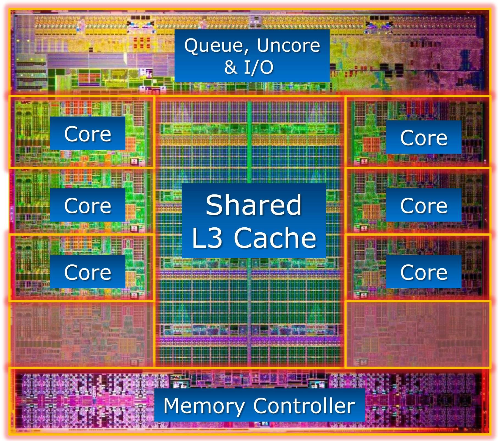 |
1. 運算核心（Core） 負責執行程式指令。多核心 CPU 可以同時處理更多工作，提升多工運算能力。 |
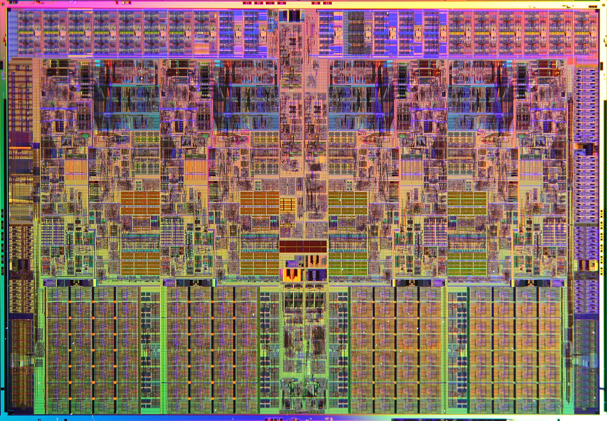 |
2. 算術邏輯單元（ALU） 負責數學運算與邏輯比較，例如數字加減、大小判斷等。 |
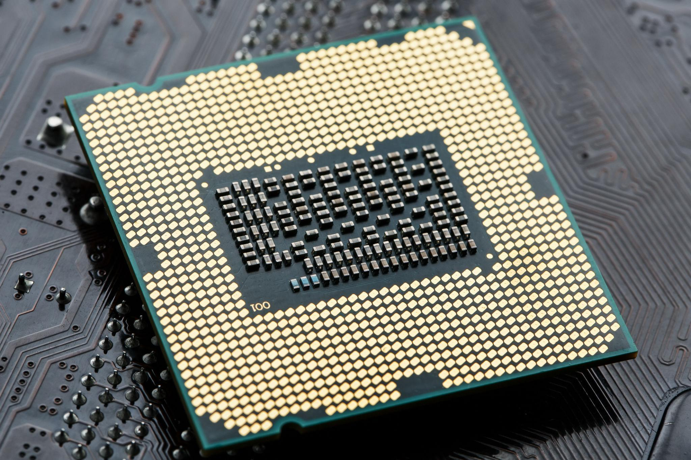 |
3. 控制單元（Control Unit） 負責解讀指令並協調 CPU 內部各單元，控制指令的執行流程。 |
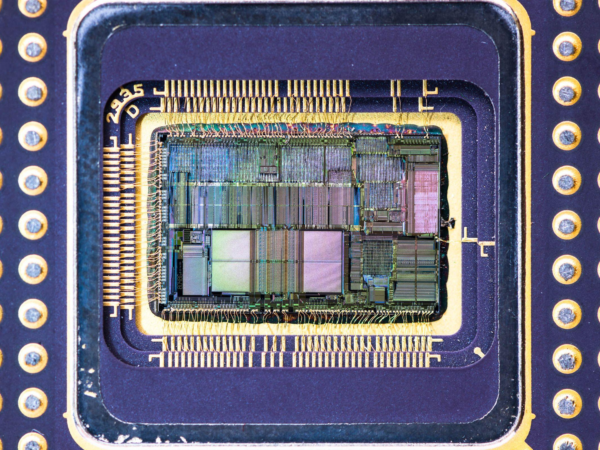 |
4. 快取記憶體（Cache） 位於處理器內部，用來暫時保存經常使用的資料與指令，減少存取主記憶體的等待時間。常見有 L1、L2、L3 快取。 |
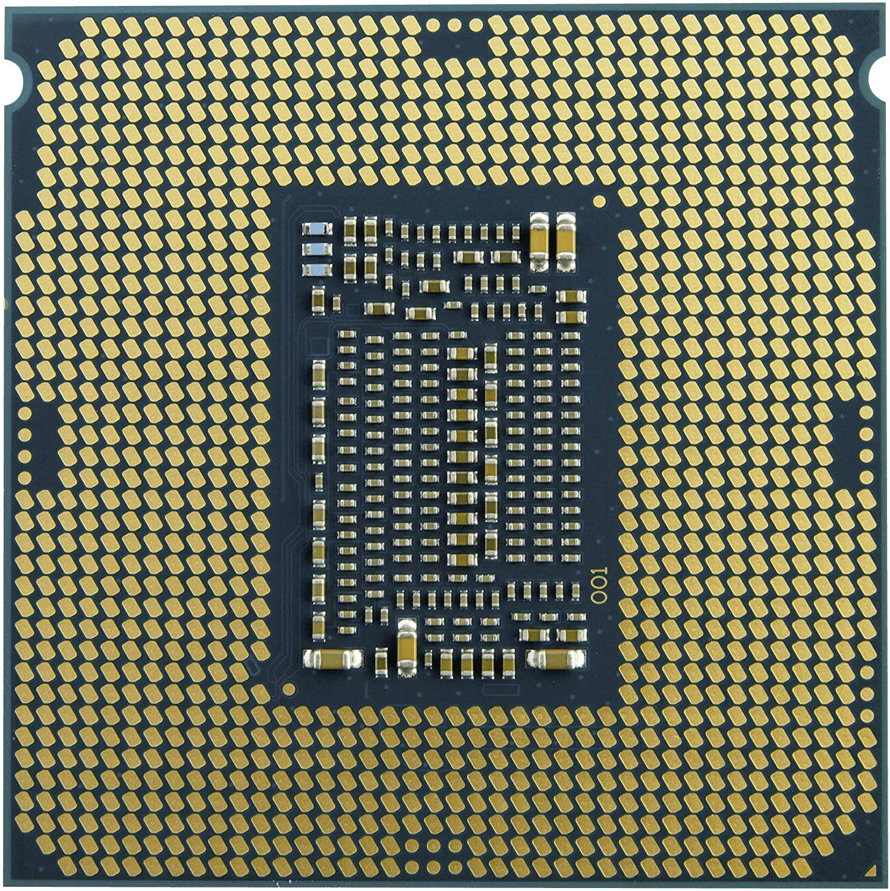 |
5. 處理器封裝與接點 用來保護晶片，並透過電氣接點與主機板連接，傳送資料及取得電力。 |
三、CPU 的主要品牌
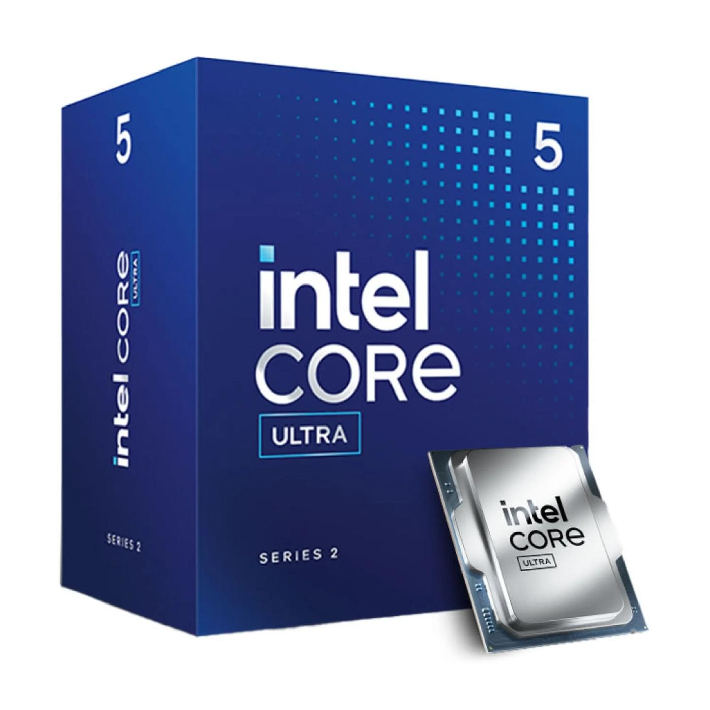 |
1. Intel（英特爾） 常見系列：
廣泛應用於桌上型電腦、筆記型電腦及伺服器。 |
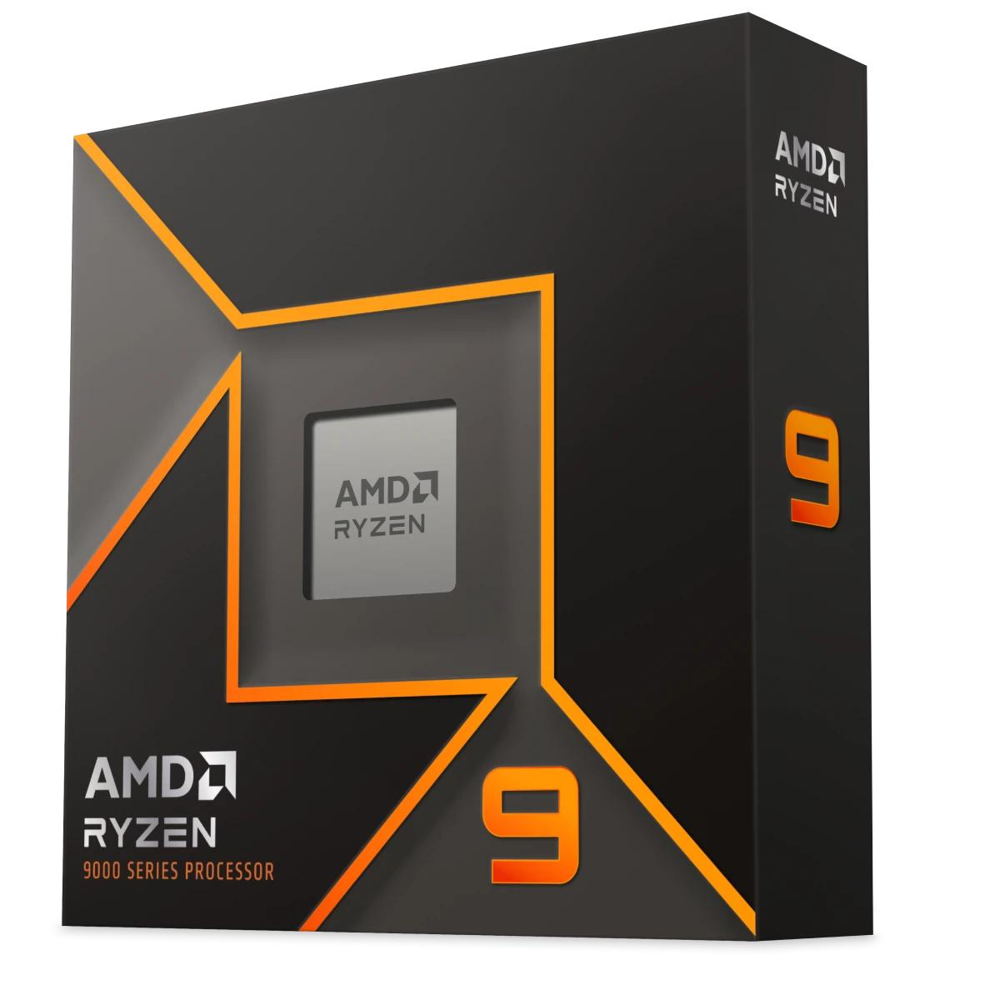 |
2. AMD（超微） 常見系列：
廣泛應用於一般電腦、遊戲電腦、工作站及伺服器。 |
四、CPU 的重要規格
規格 |
說明 |
|---|---|
核心數（Core） |
CPU 內部的實體運算核心數量 |
執行緒（Thread） |
CPU 可同時處理的硬體執行緒數量 |
時脈（GHz） |
CPU 運作頻率 |
快取記憶體 |
減少資料存取延遲 |
功耗與散熱規格 |
影響供電及散熱需求 |
CPU 插槽 |
決定可搭配的主機板 |
內建顯示功能 |
部分 CPU 可直接提供基本圖形處理 |
NPU |
部分 CPU 具備專用 AI 加速功能 |
核心數與執行緒的差別
例如，一顆 CPU 具有 8 核心、16 執行緒：
- 8 核心： 代表具有 8 個實體運算核心。
- 16 執行緒： 代表可提供 16 個硬體執行緒供作業系統安排工作。
但不是每顆 CPU 都支援每核心兩執行緒，實際規格會因產品架構而異。
CPU 時脈是什麼？
CPU 時脈通常以 GHz 表示，例如 3.5 GHz、4.5 GHz 或 5.0 GHz。
時脈越高，代表每秒運作週期越多，但CPU 的實際效能不只取決於時脈，還受到架構、核心數、快取及散熱等因素影響。
五、型號與核心代號
- CPU名稱可解析為兩部份 - 型號與核心代號。
- 以 Core i7-8086K 為例，i7-8086K 為型號；第一位是「8」則其核心代號則為 Coffee Lake，K 為後綴代號。
Intel 後綴代號
- S：低功耗版
- P、F：無內顯版
- T：超低功耗版
- K：不鎖倍頻版
- Y：超低電壓移動版（平板電腦）
- M：筆記型專用標準電壓CPU，一般為雙核，M前面一位數字是0，意味著是標準電壓處理器，如果是7，則是低電壓處理器。
- U：筆記型專用低電壓CPU，一般為雙核，U前面一位數字為8，則是28W功耗的低壓處理器（標準電壓雙核處理器功耗為35W），若前一位數字為7，則是17W功耗的低壓處理器，若為0，則是15W功耗的低壓處理器。
- H：筆記型專用高電壓CPU，採BGA封裝焊死在主機板上。
- Q：「Q」是「Quad」的縮寫，即四核CPU。
- X：最強大的筆記型CPU，「X」意為「Extreme」，此類型CPU完全不鎖頻，在散熱和供電允許的情況下可以無限制超頻，而即便是默認頻率下，也比同一時代的其它產品強大得多。
六、核心時脈(GHz)
- 又稱為內頻或主頻，可做為CPU執行效能的指標。
- 單核心CPU的時脈與效能關係很大，而如今的多核心CPU受核心數的影響就更大。
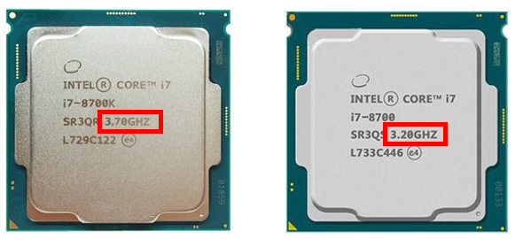
七、快取記憶體(L1/L2/L3)
- L1 - 是CPU第一層快取記憶體，分為資料快取與指令快取，功用為暫時保存CPU在處理過程中的資料。
- L2 - 是CPU第二個快取架構，分為內部和外部兩種，內部的執行速度與CPU工作時脈相同，外部執行速度為工作時脈一半，通常CPU效能以L2快取容量來決定。
- L3 - 為了適應運算速度更快的處理器，以進一步降低記憶體延遲，同時提升大量資料運算時處理效能。
八、多執行緒
- CPU的多執行緒技術是將一顆CPU核心虛擬成兩顆，進而提高CPU處理的線程數量，以達到加快處理的技術。
- 所以在核心數相同時，擁有較多執行緒者，效能勢必更強。
九、動態超頻技術
- Intel Turbo Boost(渦輪加速)技術與AMD Turbo Core技術，雖然運作方式不同，不過都是為了因應多核所帶的過剩需求，而關閉多餘未用到核心將資源集中到運作核心上，從而提升電腦效能。
十、VT與AMD-V虛擬技術
- 並非所有CPU都有支援此技術，此技術是基於虛擬機器軟體，提供一個有如實體電腦的環境，讓使用者安裝多套以上的作業系統。
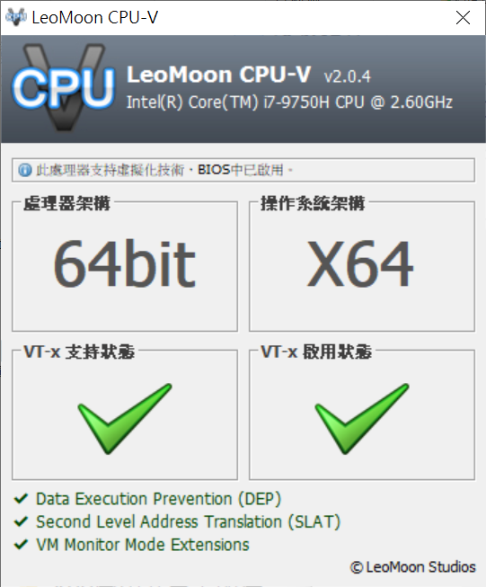
十一、多媒體指令集
- 各家CPU製造商為了提高CPU對多媒體、影像、網路等資料的處理效率而設計的特殊指令集合。
- Intel的MMX、SSE、SSE2、SSE3、SSSE3、SSE4.1、SSE4.2、AVX、AVX2。
- AMD 3D Now!
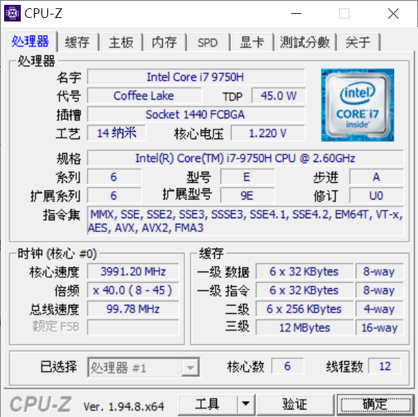
十二、CPU 的散熱方式
CPU 在進行高速運算時會產生熱量，因此需要搭配散熱設備，避免溫度過高影響效能及穩定性。
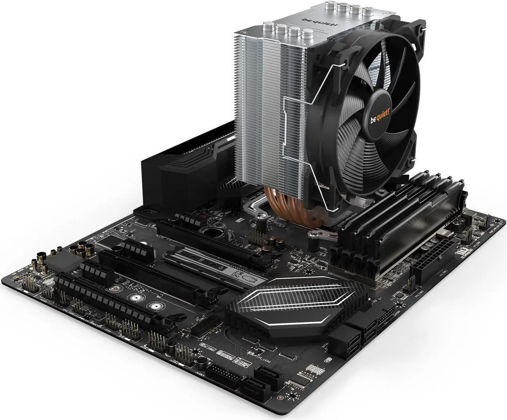 |
1. 風冷散熱（Air Cooling） 利用金屬散熱片及風扇將 CPU 產生的熱量帶走，價格通常較親民，也較容易維護。 |
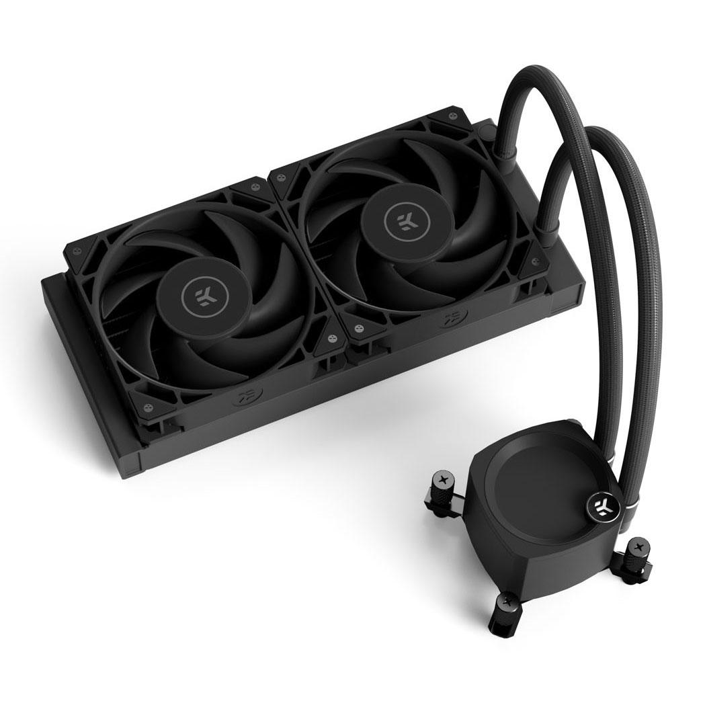 |
2. 水冷散熱（Liquid Cooling） 利用冷卻液、水泵及散熱排將熱量帶走，適合高功耗處理器及有特定散熱需求的電腦。 |
十三、傳統 CPU 與 AI CPU 的差別
隨著人工智慧技術發展，部分新型處理器開始整合 NPU（神經網路處理單元），協助處理 AI 工作。
比較項目 |
一般 CPU |
AI CPU（具 NPU） |
|---|---|---|
基本文書處理 |
支援 |
支援 |
遊戲及一般運算 |
支援 |
支援 |
AI 運算 |
使用 CPU 或 GPU |
可額外使用 NPU |
專用 AI 加速 |
不一定具備 |
具備 |
常見用途 |
文書、遊戲、程式運算 |
一般用途、AI 影像與語音處理 |
例如，Intel Core Ultra 部分系列及 AMD Ryzen AI 系列整合了專用 NPU，可在支援的軟體中加速 AI 工作。
要注意：有 NPU 不代表所有 AI 工作都比使用顯示卡更快。大型 AI 模型、影像生成等工作仍可能更適合使用高效能 GPU。
十四、CPU 與其他硬體的關係
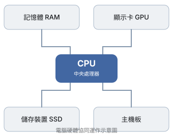
CPU 需要與其他硬體互相配合：
- 主機板： 提供 CPU 安裝位置及硬體連接。
- 記憶體： 暫時儲存 CPU 執行程式時需要的資料。
- 顯示卡： 負責影像處理及大量平行運算。
- 儲存裝置： 保存作業系統、應用程式與檔案。
- 電源供應器： 提供 CPU 與其他硬體所需的電力。
十五、如何選擇CPU
- 使用需求：文書工作、遊戲、影片剪輯及 AI 運算，對 CPU 的需求各不相同。
- 核心數量：多核心通常有利於多工及支援平行處理的軟體。
- 單核心效能：對部分遊戲與日常應用程式相當重要。
- 主機板相容性：必須確認 CPU 插槽、晶片組及 BIOS 是否支援。
- 散熱需求：選擇能夠應付處理器功耗的散熱器。
- 價格與效能：依預算選擇適合的 CPU，不一定越昂貴越適合。
- AI 功能：若需要在電腦本機執行 AI 功能，可以考慮具備 NPU 的處理器。
包裝內容物
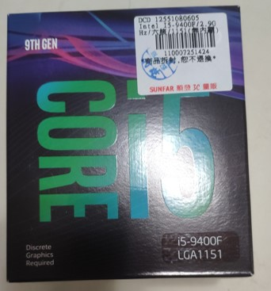
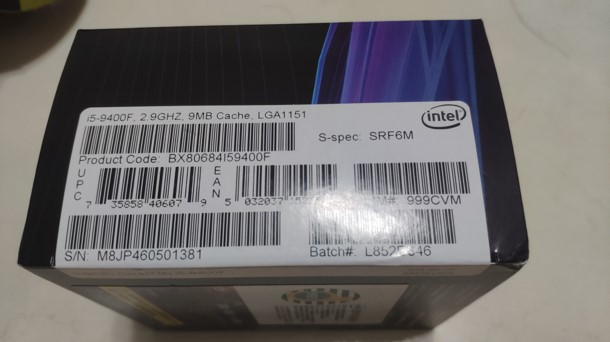
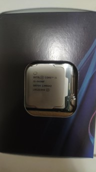
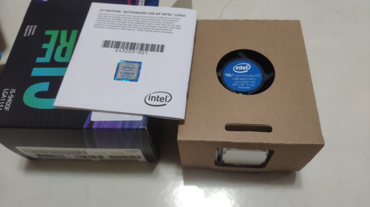
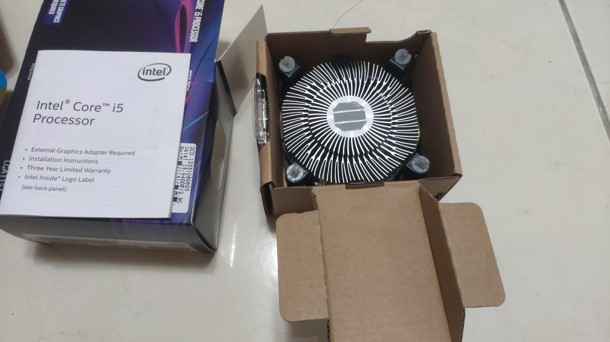